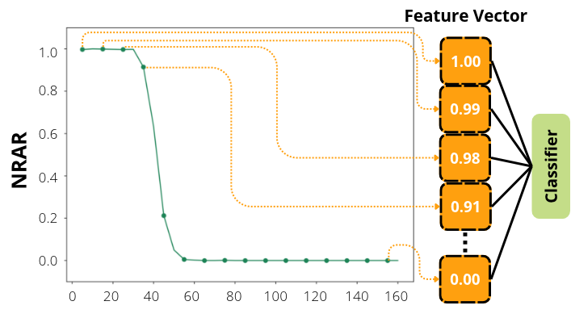
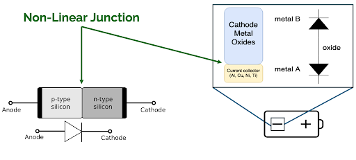
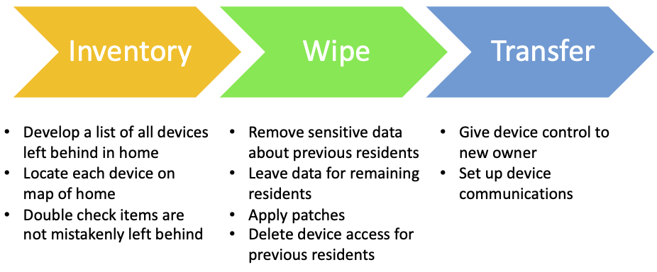
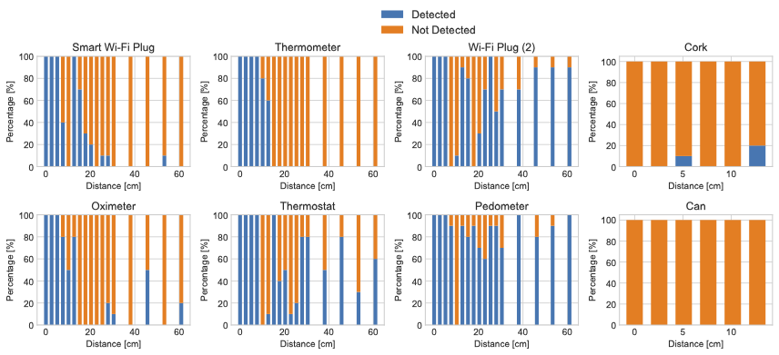
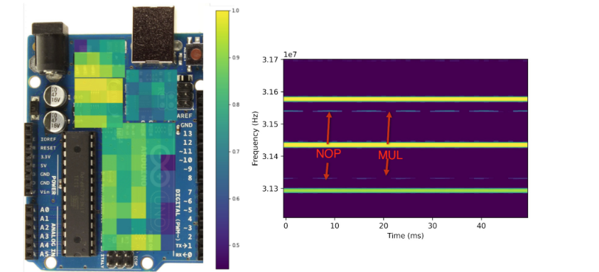
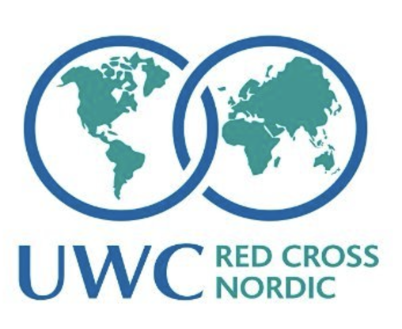

Ph.D. Student in Computer Science, Dartmouth College
I work with David Kotz and Tim Pierson on wireless and IoT security. My work focuses on harmonic radar (non-linear junction detectors) for detecting consumer electronics. My broader interests include side-channel analysis, wireless network security, and systems exploitation.





